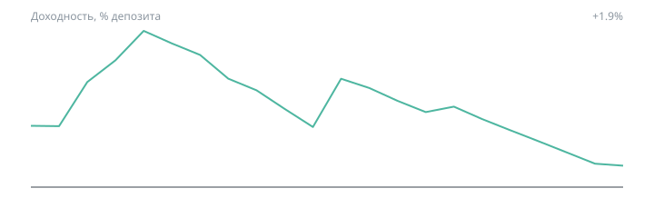
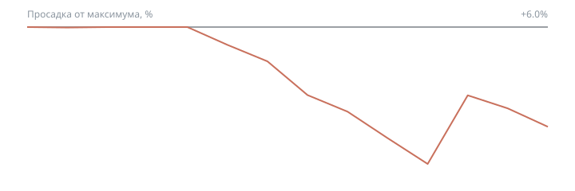

Каждую неделю алгоритм-наблюдатель проверяет два числа и сравнивает их с порогами, заданными заранее. Результат каждой проверки публикуется здесь.
Портфель торгует на демо-счёте Tickmill теми же настройками, что и в расчётах. Кривые строятся по закрытым сделкам этого счёта, а не по истории — это проверка расчёта реальной торговлей.


Данные на 03.09.2026, 22:00
Показаны недели демонстрационного счёта: пока это проверка расчёта живой торговлей. С запуском реального счёта лента начнётся заново и будет показывать только его.
| Неделя | Сделок | Результат | Рост | Просадка | Уровень |
|---|---|---|---|---|---|
| 2026-08-31 — 2026-09-06 | 1 | -1,068 | -1.1% | 1.1% | норма |
Просадка отвечает на вопрос «насколько сейчас больно». Пороги: до 25% — норма, 25–36% — внимание, 36–44% — разбор, выше 44% — остановка торговли.
Математическое ожидание за 100 сделок отвечает на вопрос «работает ли ещё система». Порог тревоги — ниже −0.05% на сделку.
Число сделок сверяется с ожидаемым: так обнаруживается остановившийся или зависший алгоритм, который иначе выглядел бы просто как затянувшаяся просадка.
Наблюдатель торговых решений не принимает и в сделки не вмешивается — он измеряет и сообщает. Действия при каждом уровне определены заранее, до того как станет неприятно. Подробно — в Живой счёт.